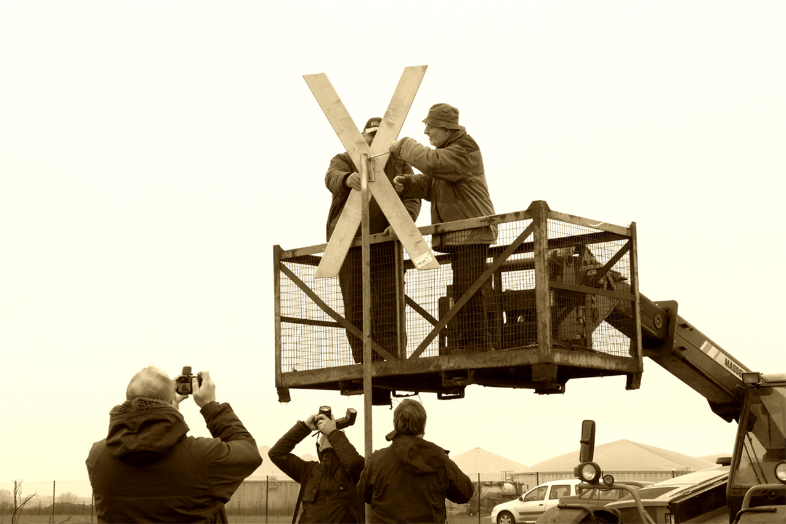

MiLaN - Mit Lust an Natur

Widerstandskreuz an Ferkelfabrik – Interimslösung Um Herrn Straathof bei gelegentlichen Besuchen seiner schönen Ferkelfabrik wieder den Ausblick auf ein rosa Kreuz zu gönnen, haben wir eine Zwischenlösung gefunden. Ein vorgefertigtes Kreuz der an vielen Gehöften der Region zu sehenden MiLaN - Kleinserie und ein Trägerrohr der erforderlichen Dimension wurden uns geschenkt. Der Schmied konnte die Befestigungselemente komplettieren. Wenn erneut „geklaut“ werden sollte, kann eindeutig kein Materialwert im Vordergrund stehen. Dann wäre das ein politischer oder auch „Racheakt“.Vielleicht will darauf jemand wetten, zumindest Prognosen abgeben. Für Sponsoren eines Ersteinsatzes sind wir offen – einzuzahlen auf unser BI-Konto, IBAN DE52 1506 1638 0104 0004 63. Am 14. Dezember wurde das Symbol des Widerstandes gegen Massentierhaltung errichtet.